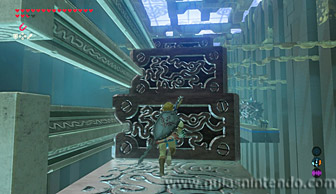

Se encuentra en la región de la torre de las colinas, al sur de la torre, cruzando el río. Lo encontrarás al sur del Monte Satoly. Puedes subir hasta arriba del monte y dejarte caer por el sur en paravela.
Al empezar solo debes saltar en la plataforma que se balancea (calculando bien el salto para no saltar al vacío). En la segunda plataforma tendrás que usar el imán en primer lugar, así podrás balancearla y después saltar sobre ella como hiciste en la primera plataforma.
Llegarás a un puente levantado, solo tienes que disparar flechas a las cuerdas para hacer que caiga y así poder seguir avanzando. Al cruzarlo podrás abrir un cofre en el lado derecho (contiene una Lanza del bosque).
Después sigue por el camino de la izquierda y ve apartando las bolas con pinchos usando el imán con mucho cuidado de no moverlas demasiado para que no te den al soltarlas.
Siguiendo el camino de las bolas con pinchos hasta el final encuentras un segundo cofre que contiene un arco del bosque. Después continúa el camino que hay antes de la última bola. Ahora podrás usar de nuevo el imán para atraer una plataforma de metal. Sube en ella rápidamente y mantente quieto para que te acerque hacia otras plataformas que se ven a lo lejos.
Usa el imán para crear una escalera con todos estos bloques que te permita llegar a las escaleras. Sin embargo, puedes coger un cofre más antes de seguir el camino. Para ello tienes que dejarte caer y planear hasta la plataforma que hay justo debajo. Si lo haces bien conseguirás una rupia dorada.
Desde ahí abajo tendrás que crear una nueva escalera para subir de nuevo y alcanzar otra vez el camino de salida.

Ahora golpea el interruptor de cristal y caerán del techo dos lámparas. Puedes romperlas para que al caer quemen las ramas o directamente disparar una flecha de fuego a ellas.
El caso es que liberes las puertas de salida de las ramas y puedas usar el imán en ellas para abrirlas. Una vez abierta la puerta que da al altar, podrás llegar a él para conseguir el símbolo de valía.